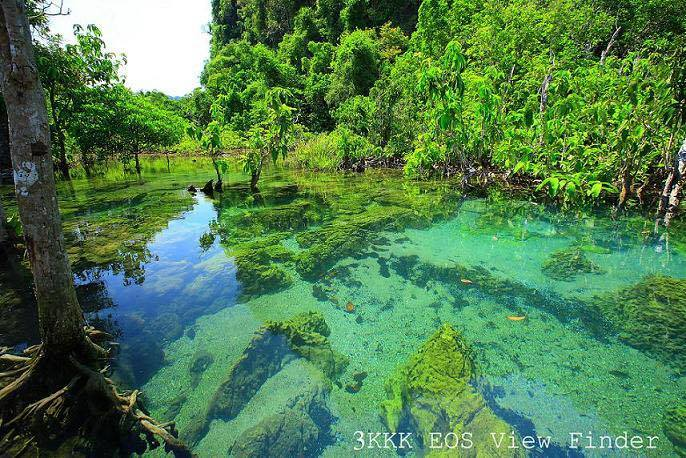

ระบบนิเวศน้ำกร่อย

ระบบนิเวศน้ำกร่อยพบได้ในพื้นที่ปากแม่น้ำ ที่ซึ่งน้ำจืดจากแม่น้ำและน้ำเค็มจากทะเลมาบรรจบกัน สภาพแวดล้อมนี้เหมาะสมสำหรับสิ่งมีชีวิตเฉพาะกลุ่ม เช่น ปลากะพง ปูม้า และสัตว์น้ำที่สามารถปรับตัวเข้ากับการเปลี่ยนแปลงของความเค็มได้
ระบบนิเวศน้ำกร่อยมีบทบาทสำคัญในการเป็นแหล่งอนุบาลสำหรับสัตว์น้ำวัยอ่อน รวมถึงการช่วยลดการกัดเซาะของดินในพื้นที่ชายฝั่ง และการสนับสนุนระบบนิเวศโดยรอบให้สมดุล